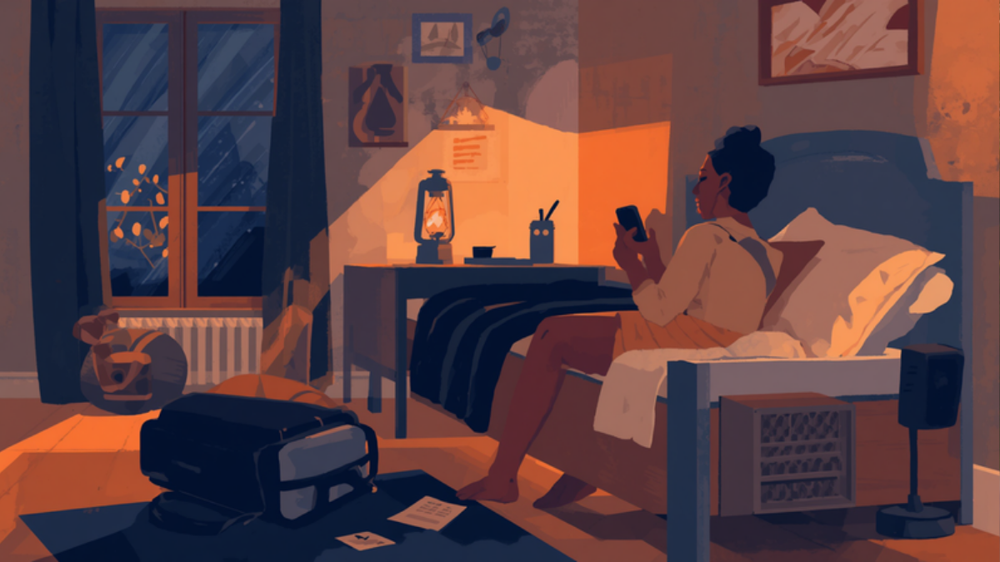
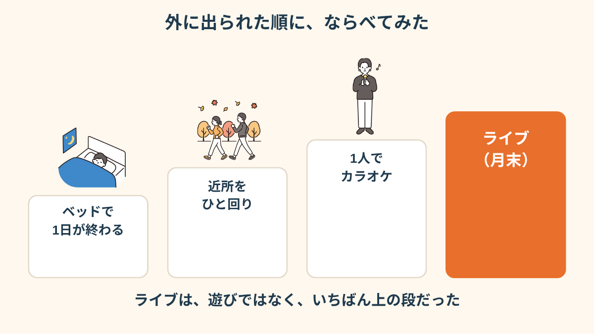
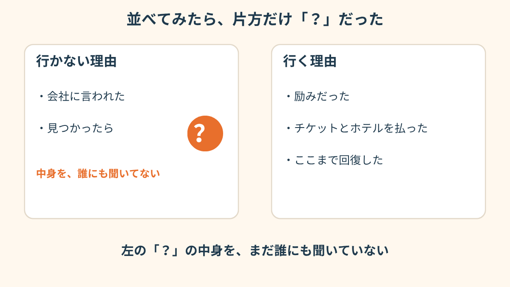
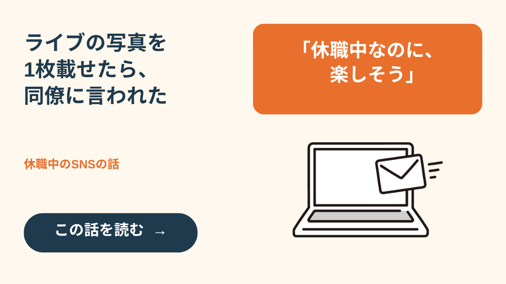
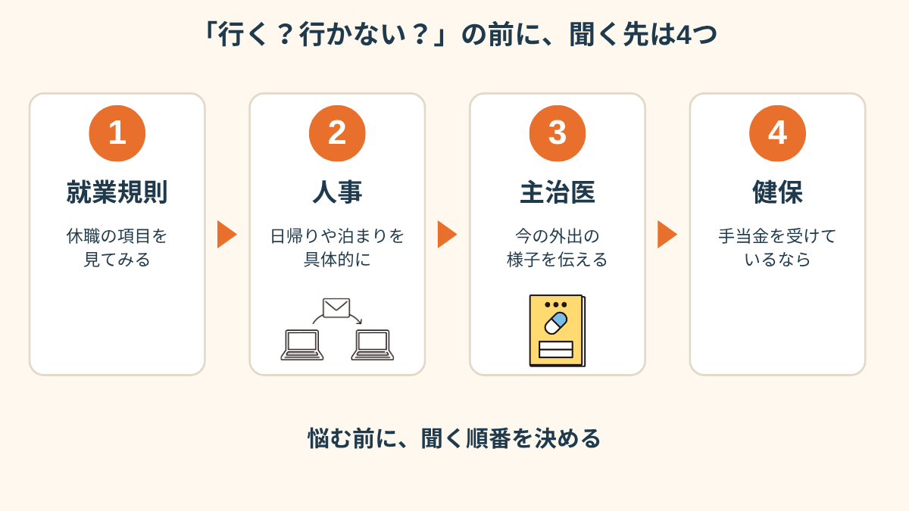
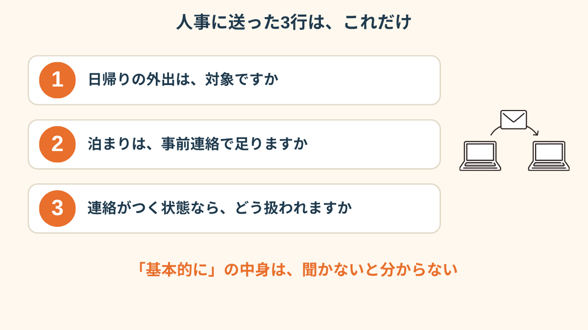
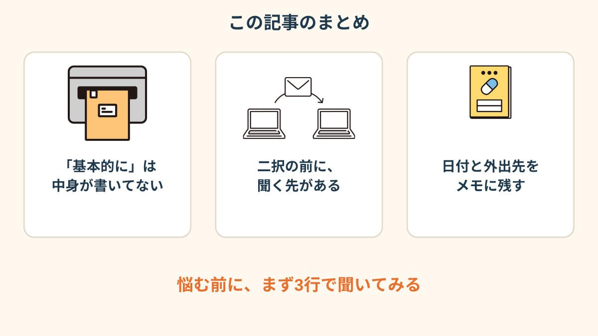

上司のメールは、そんな一文でした。
ライブまで、あと2週間。チケット代は、とっくに払ってあります。
「基本的に」の一文が、お金を払ったあとに届いた
休職して、もう4ヶ月くらい。
その間ずっと、会社とのやり取りは月1回の連絡だけでした。
だから油断してたんです。
「今更」って、声に出ました。ほんとに。
ライブのチケットは、休む前に取ったものでした。
遠いので、泊まりです。ホテルも押さえてある。
キャンセルの期限は、もう過ぎていました。
メールを何回も読み返して、気づいたこと。
「できません」じゃなくて「基本的に」、なんですよね。
この「基本的に」が何を指すのか、どこにも書いてない。それが、いちばん眠れなくなる原因でした。

ベッドの人が、カラオケまで行けるようになった
休み始めの頃は、ほんとに何もできませんでした。
1日、ベッド。トイレに立つのも「よし」って気合いがいる感じ。
それが、少しずつ。
玄関を出られた日。近所をひと回りした日。
最近は、1人でカラオケにも行けるようになっていました。

「休んでから、外に出られた日をカレンダーに丸つけてたんです。最初の月は丸がゼロで。だから、ライブの日の丸を想像するだけで、ちょっと泣けました」
先に言っておくと、ライブは、遊びのつもりじゃなかったんです。
休んでいる間、「これがあるから生きてる」と思えた、数少ないものでした。
夜中に、行く理由と行かない理由を並べた
その夜、スマホのメモに2列つくりました。
左に「行かない理由」、右に「行く理由」。
左は、短いんです。「会社に言われた」「見つかったら」。
右が、やたら長い。励みだった、チケット代、ホテル代、ここまで回復した、他に楽しみがない…。
でも、並べても答えは出ませんでした。
怖いのは、左の「見つかったら」の中身を、自分が何も知らないことでした。

「正直、行くか行かないかより、『見つかったらどうなるんだろう』が頭の中でどんどん大きくなって。実際に何が起きるのかは、調べてもいなかったんですよね」

写真を1枚載せた日の話を読む →「行く」「行かない」の前に、聞くことがあった
翌朝、少し頭が冷えてから、気づきました。
私は「行くか、行かないか」の二択でばっかり考えてたけど、その前に聞けることがあった。
「基本的に」の中身は、上司も人事も、私より知ってるはず。
知らないまま悩むのは、ただの損でした。
聞く先は、順番にこの4つ。就業規則、人事、主治医、それと、傷病手当金をもらっているなら加入先の健保。


聞いてみたら、二択じゃなかった
私が人事に送ったのは、3行です。
「日帰りの外出は対象ですか」「泊まりの場合は事前連絡で足りますか」「連絡がつく状態なら、ライブはどう扱われますか」。
上司のメールには、そのまま返さず、人事あてにしました。
返事は2日後。
思っていたより、ずっと細かく書いてありました。
泊まりの外出は、連絡が取れる状態なら事前に一言ほしい、という内容。
「ライブそのものを禁止する」とは、どこにも書いてなかったんです。
主治医にも話しました。
散歩とカラオケのことも伝えたら、「それは回復の記録としてちゃんと残しておきましょう」って。


この記事に、聞いてみたいことはありますか？
「自分の場合はどうなんだろう」と思ったことを、気軽に書いてみてください。いただいた質問は個別にお返事したうえで、匿名で記事にすることがあります。